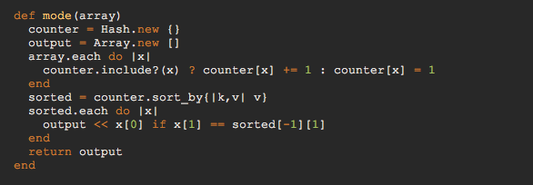
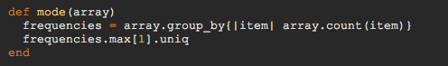

Before we get into taking a closer look at this powerful method, lets preface our talk with an inspection of two methods that solve the same problem. We'll be looking at the work done for the mandatory pairing challenge this week 'calculate the mode', in which we were asked to, given an array as an input, output an array of the values that occur most frequently.
Before I discovered the group_by method, my pairing partner and I found a pretty viable solution:
It's definitely a good solution, if not a bit difficult to understand, so let's break this method down, one item at a time:
counter and output, respectively. counter if the element is not present, and adding one to the value of the associated key if it is present.counter hash by frequency (v) and have that result (a 2d array output of key and value pairs) assigned to the sorted variable. sorted, we append it to the once-empty output array, only if the frequency of the key matched the frequency of the most frequent occuring item in the 2d array. This is ran to ensure that elements that appear with equal frequency will both be appended to the output array.output array, containing each key that appears the most in the original argument.That's quite a bit of logic! Though a viable solution (we clearly needed to define our block parameters more explicitely), the amount of steps that are required to generate the working output is pretty big. After giving it a day to think about and read through the Well-Grounded Rubyist a bit more, a glorious realization came to me that we were doing it all wrong. Why assign the keys to item in the array and the value to it's occurence? What if we assign the key to the frequency of the item, and the value to be an array of the items that have that frequency? This is where the group_by method came into play. Observe the following solution to the same problem:
Pretty clean, eh? There's actually a decieving amount of work being done in these two lines of code, so let's break it down again, first by explaining what exactly the group_by method is doing.
group_by is a method that operates on an enumerable object and returns a hash. It takes a block, using it to iterate through the array. For every item in the array that returns a unique value in the block, a key/pair is generated, the key being the unique value that is block generates, the value being the element in the array that generated the unique value. Let's take a look at a basic example. Consider the following array:
foo = [1,2,3,4,5,6]
And let's imagine that we want to create a hash that will tell us what elements of this array are greater than 3, and which elements are not greater than three. We can use group_by to generate a key of true and false, based on the result of the block expresion, with each value containing the items in the array that returned true or false, respectively.
foo.group_by { |number| number > 3 }
# => {false=>[1, 2, 3], true=>[4, 5, 6]}
Now that we can see how group_by will generate out hash, we can see that the first line of our refactored method will turn the input array into a hash of keys associated with the frequency of the item in the array (array.count(item)) and values with arrays. if array = [1,1,1,2,2,4,4,4], our output would be:
{3=>[1,1,1,4,4,4], 2=>[2,2]
The second line of code performs a .max on the resulting frequencies hash, outputting a 2d array (in the above case it would be [3, [1,1,1,4,4,4]), and then subsequently returning the second element of that array, but removing any repeat elements (resulting in and ultimatey returning the correct answer: [1,4]).
Two lines of code, versus 7. About three steps of logic, versus 5.
It might be surprising to hear that, despite the prettiness of our second method, it is, in fact, much, MUCH slower than the original solution that I came up with my pairing partner. And despite its alluring nature, I ultimately decided to ditch the second method in favor of the first (and thus attempt to fix it up a bit more), even though I was so much happier with how our second method looked. Turns out, pretty code doesn't equate to perfect code, and here's why:
Consider the number of iterations performed in each method. We can see that in mode method #1, we perform about 3 -- we iterate once through the array to calculate the frequency of numbers (by adding one to it's associated key every time it is visited in the array). This iteration happens once, and only once. The second iteration we use is found in the sort_by method, where we sort the hash by value, outputting a 2d array. Ruby's sorting methos uses a quicksort, a pretty fast and effective sorting algorithm. The final iteration is again a once-through, testing each element in the array against the value that has the most frequency. That's three iterations total. We're looking at a runtime of (if my terrible math serves me correctly) O(n). A linear runtime, as the number of iterations do not increase based on the dataset, though they will take longer given the size of the array inputted.
Consider mode method number 2. For each element in the array, a .count is being run to determine how many times that element appears in the given array. one .count will iterate through the whole array. If we have an array of four items, we would run four iterations though the array. That's already more than the number of iterations passed through the previous method. For an array of 10 items, we would have to iterate through the entire array *10* times. This may not seem like a big deal when handling smaller inputs, but what if we wanted to calculate the mode of an array with 200,000 elements in it? Not only that, we are running a .max through the output hash, which adds an additional iteration over the absurdley increasing number of iterations we'd have to perform prior. Running a benchmark comparison of these two methods showed that an array with one million elements (each element being a random number between 1 and 1000) could be computed in .31 seconds with method #1.
Method #2, for the same exact calculation, took 47 seconds to complete. If my shitty math and understanding of Big O notation is correct, we're looking at a runtime of O(n^2). That's exponentially increasing runtime based on the length of the dataset. Not looking good for the sexy code.
Pretty code is alluring. Elegant solutions are desireable. But if an elegant solution has an ugly runtime, it's better to try and refactor the algorithm that worked more efficiently than to stick with the solution that could be one or two lined. I think there's a certain amount of pride associated with being able to do something using the least number of lines, but in that pursuit, we forget to remember that, though seemingly simple, the actual work being done is far greater than what we think might be happening. This was a huge revelation for me as I worked on the problem, and I find great value in letting go of my ability to find the "prettiest" or "quickest" answer to a problem.
Good code does not have to be short, or minimal, to be elegant. Nor should it be. The elegence of a solution lies in the clarity of the variables used and the algorithm employed to produce the output. Ruby's alluring methods must be used with caution if they are to be employed.
Back to Top